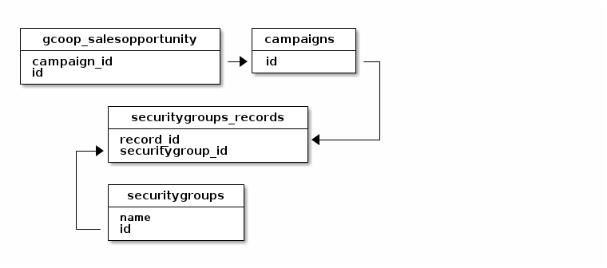

Graficar desde consola
index | OSiUX | blog | docs | charlas | rss
barra
Páginas más solicitadas
ssh osiux 'cat osiux.com-access.log | egrep -o "GET /.*HTTP" | sed s/HTTP//g | cut -c 5- | egrep -v "(img|tmb|css|robots|ico)" | sort | uniq -c | sort -nr | head' | barra
0
Códigos de error HTTP
ssh osiux 'cat osiux.com-access.log | egrep -o " [0-9]{3} "' | sort | uniq -c | sort -nr | barra
0
Análisis de user-agent
ssh osiux 'cat osiux.com-access.log | cut -d\" -f6 | cut -d" " -f1 | sort | uniq -c | sort -nr' | head -20 | barra
0
block-diag
diagram {
#default_node_color = black;
#default_linecolor = #cfff00;
#default_textcolor = #cfff00;
default_fontsize = 14;
span_width = 100;
span_height = 60;
node_height = 40;
node_width = 130;
inet [shape = cloud];
inet -- osiux;
network BuenosAiresLibre {
address = "10.4.14.x/224"
osiux [address = "10.4.14.225"]
aleosi [address = "10.4.14.251"]
eosial [address = "10.4.14.250"]
osiale [address = "10.4.14.226"]
ovislink [address = "10.4.14.228"]
}
network CompartirEsBueno-IPv6 {
address = "2a00:1508:1:f00f::1/64"
aleosi [address = "::1"]
caipiroska [address = ":a9f9:af72:93a2:c94c"]
leosia [address = ":6670:2ff:fe3d:9173"]
}
network CompartirEsBueno-IPv4 {
address = "10.254.x.x/16"
aleosi [address = "10.254.104.161"]
caipiroska [address = "10.254.104.182"]
eosial [address = "10.254.111.107"]
leosia [address = "10.254.47.64"]
sialeo [address = "10.254.157.127"]
}
network linklocal-wan {
address = "fe80::"
aleosi [address = "::a2f3:c1ff:fe9d:2579"]
eosial [address = "::fad1:11ff:fe7a:61b3"]
}
network linklocal-wlan {
address = "fe80::"
caipiroska [address = "::1e4b:d6ff:fed2:f99"]
aleosi [address = "::a0f3:c1ff:fe9d:257a"]
eosial [address = "::f8d1:11ff:fe7a:61b4"]
leosia [address = "::6470:2ff:fe3d:9175"]
sialeo [address = "::90f6:52ff:fe6a:7dee"]
}
network librenet6 {
address = "fe80::"
aleosi [address = "::c8e1:c2ff:fe9c:cfe4"]
}
network librevpn {
address = "192.168.9.x/24"
caipiroska [address = "192.168.9.70"]
}
network linklocal-lan {
address = "fe80::"
aleosi [address = "::a2f3:c1ff:fe9d:2577"]
eosial [address = "::fad1:11ff:fe7a:61b1"]
leosia [address = "::68d3:ecff:fefb:d060"]
osiale [address = "::214:85ff:fe3c:5a9f"]
sialeo [address = "::92f6:52ff:fe6a:7dec"]
}
}
ditaa
+------------------------+ +------------+
| gcoop_salesopportunity | | campaigns |
+------------------------+ +------------+
| campaign_id |-->| id |--+
| id | +------------+ |
+------------------------+ |
|
+------------------------+ |
| securitygroups_records | |
+------------------------+ |
| record_id |<-------+
+-->| securitygroup_id |
| +------------------------+
|
| +----------------+
| | securitygroups |
| +----------------+
| | name |
+---| id |
+----------------+

gnuplot
graphviz
dot
digraph dot {
node [fontname=monospace,fontsize=8];
nodo1 -> nodo2;
nodo2 -> nodo3;
nodo2 -> nodo4;
nodo1 -> nodo5;
nodo5 -> nodo6;
nodo5 -> nodo7;
nodo1 -> nodo8;
}
neato
graph dot {
node [fontname=monospace,fontsize=8];
nodo1 -- nodo2;
nodo2 -- nodo3;
nodo2 -- nodo4;
nodo1 -- nodo5;
nodo5 -- nodo6;
nodo5 -- nodo7;
nodo1 -- nodo8;
}

image-magick
org-timeline
org-clock 2014-02-04 | org-timeline
13: 14: 15: 16: 17: 18: ┊ ┊ ┊ ┊ ┊ ┊ ┊□□□□▣▣┊□□□□□□┊□□□□□□┊□□□□□□┊□□□□□□┊ almuerzo ===============> 38 ┊□□□□□□┊□□▣▣▣▣┊□□□□□□┊□▨▣▣▣▣┊□□□□□□┊ gca ===============> 133 ┊ ┊ ┊ ┊ ┊ ┊ TOTAL ===============> 171
plant-uml
Diagramas de Clase
campaign "1" *-- "many" calls
campaign <|-- campaigns
class campaign {
-id
-id_sugar
}
class calls {
-id
-id_campaign
}
class campaigns {
-id
-nroLote
-name
-hola()
}

Diagramas de Secuencia
skinparam sequenceParticipantFontName Monospaced skinparam sequenceParticipantBorderColor black skinparam sequenceLifeLineBorderColor black skinparam sequenceArrowFontName Monospaced skinparam sequenceArrowColor blue participant "firefox\n1.2.3.4:4321" as firefox #orange participant "proxy\n2.2.2.2" as proxy #green participant "DNS\n8.8.8.8:53" as DNS #yellow participant "google.com\n6.6.6.6:80" as google #red hide footbox autonumber "<b>[0]" firefox -> DNS: cuál es la IP de <b>google.com</b> DNS -> DNS: log DNS --> firefox: es la IP <b>6.6.6.6</b> firefox -> google: mi IP es <b>1.2.3.4</b> + UserAgent + GET / google -> google: log google --> firefox: HTML

gnuplot
desde un archivo de datos
head ~/data/bcc/gca/asterisk/asterisk1-bean-query-20.dat
reset set term png size 800,600 set title "sqlsoap_server bean vs query" set xlabel "requests" font "Inconsolata,10" set ylabel "tiempo en segundos" font "Inconsolata,10" set tics out nomirror set grid ytics set xtics font "Inconsolata,8" nomirror rotate by right at 0.5,0 set ytics nomirror set tics font "Inconsolata,8" nomirror set mytics set grid lc rgb "#d5e0c9" plot data using 1:2 with lines lw 1 lt 3 title 'bean', \ data using 1:3 with lines lw 1 lt 4 title 'query'

procesar un log, generar el archivo y graficar
cd ~/data/bcc/gca/cct-2797 egrep "0895.*Query Execution Time:[0-9\.]+" sugarcct6.log | awk '{print $4"\t"$9}' | sed s/"Time:"//g | awk '{if ($2>h[$1]) h[$1]=$2} END {for (hh in h) print hh,h[hh]}' | sort | tee 0895-query-execution-time.dat
reset set terminal png size 800,600 set lmargin 10 set bmargin 5 set rmargin 5 set title "Máximo Tiempo de ejecución Queries usuario 0895\nsugarcct6.log" font "Inconsolata,10" set xdata time set timefmt x '%H:%M:%S' set format x '%H:%M:%S' set xtics font 'Inconsolata,8' rotate set mxtics set key off set tics font "Inconsolata,8" nomirror set mytics set grid ytics set xlabel "horario" font "Inconsolata,9" set ylabel "tiempo en segundos" font "Inconsolata,9" plot data u 1:2 lw 5 w i